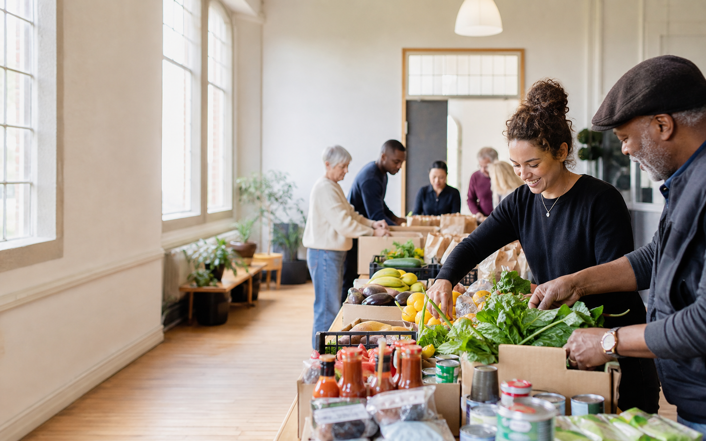
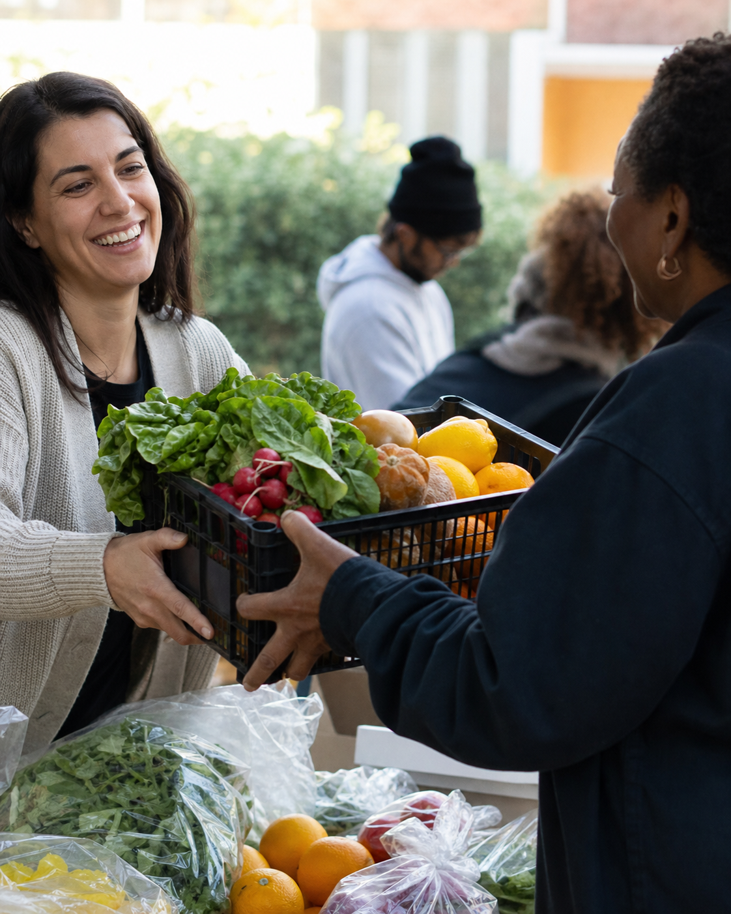

Fresh food table
Choose fruit, vegetables, bread, and pantry staples to take home. Bring a bag if you can.

Food, neighbours, practical help
Common Table brings neighbours together around fresh food, useful support, and a place to be known by name.
1,240 food parcels shared this month
Why we are here
Food costs more. Time gets tighter. Asking for help can feel impossible. We make it easier to pick up good food, meet someone who can point you in the right direction, and find your footing again.
How we help
You do not need to prove a crisis to come in. Start with the thing that would make this week easier.
Choose fruit, vegetables, bread, and pantry staples to take home. Bring a bag if you can.
A hot meal, a long table, and no need to know anyone before you arrive.
Get help finding local services, filling in forms, or working out the next call to make.
What neighbours make possible
Every food parcel, lunch, and conversation runs on donations of time, food, money, and care from people nearby.

Join in
Pack bags, set out produce, make tea, or welcome people at the door. We will show you the ropes.
Ask about volunteeringA monthly gift helps us buy the food that does not arrive through donations.
Talk about givingCome and see us
Drop in, send a note, or bring someone who might need a hand. You are welcome here.
Common Table Hall
41 Lindenstraat · Amsterdam
Food table: Tuesday & Friday · 10:00–14:00
Neighbour lunch: Wednesday · 12:00–14:00